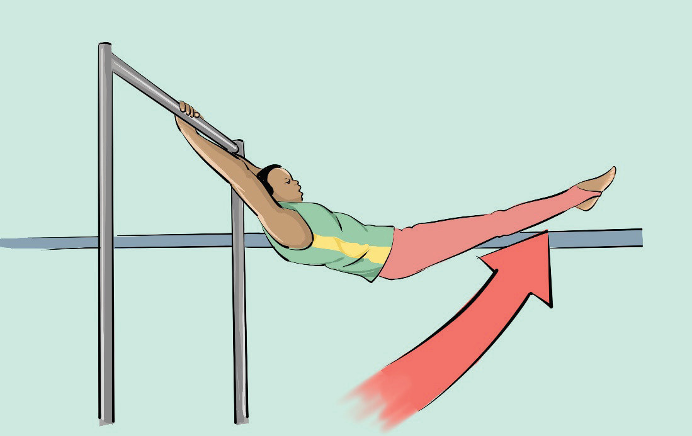

Activity 4.32
Search from the internet and other sources on how to execute forward and back swings to a hollow hold and practice it.
Tap swing on bars
A tap swing on bars is a gymnastics skill in which the gymnast swings back and forth on the bars in a controlled and rhythmic motion. The skill builds momentum for more advanced skills such as releases, dismounts, or transitions between bars. It is often one of the first swinging techniques learned in developing bar routines. The following steps will help you practice tap swing:
Grip a bar with arms straight and legs hanging down, engage the shoulders and activate the core to maintain a stable body position;
Swing your legs behind you, slightly bending at the hips and knees. Keep your body tight and controlled to prevent swinging wildly;
Push your hips to create momentum and allow your hips to tap the bar just as your legs come forward, giving the swing more power; and
Move your body in an arch, bringing your feet above the bar, and use your arms and core to control the motion and prepare for the next swing, Figure 4.36.
